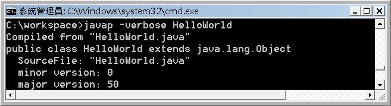

如果你在新版本的JDK上開發程式，編譯過後的.class檔案，在舊版本的JRE上執行，將會發生以下的錯誤訊息：
上面的執行範例中，是在JDK6下編譯出.class，切換PATH至JDK1.4，使用其JRE1.4來載入、執行.class，結果出現UnsupportedClassVersionError，並指出這個.class的major.minor為50.0。
編譯器對於每個.class檔案，都會標示主版本號與次版本號，不同的版本號，意味著這個類別檔案是不同版本的JDK編譯出來，而.class的格式可能有所不同。JVM在載入.class前，會先確認其版本號是否在可接受的範圍，否則就不會處理該.class檔案。
class的基本結構如下：
ClassFile {
u4 magic;
u2 minor_version;
u2 major_version;
u2 constant_pool_count;
cp_info constant_pool[constant_pool_count-1];
u2 access_flags;
u2 this_class;
u2 super_class;
u2 interfaces_count;
u2 interfaces[interfaces_count];
u2 fields_count;
field_info fields[fields_count];
u2 methods_count;
method_info methods[methods_count];
u2 attributes_count;
attribute_info attributes[attributes_count];
}
.class的第1到4位元組是標示類別檔案身份的魔術數字（Magic Number），它的值是0xCAFEBABE（咖啡寶貝）。第5到6位元組是minor版本號，第7到第8位元組為major版本號，可以使用十六進位編輯器觀看編好的.class檔案看到：
其中00 32轉換為十進位制，就是50，這也就是為什麼剛剛顯示的錯誤訊息中，指出major.minor為50.0。你也可以使用JDK工具程式javap，確認.class的版本號：

在 The JavaTM Virtual Machine Specification 中 The class File Format 最底下的註釋1中指出，Sun JDK 1.0.2的JVM實作，支援的.class檔案版本號為45.0到45.3。1.1.X則支援45.0到45.65535（向前相容）。1.2則支援 45.0到46.0。在程式中，可以透過System.getProperty("java.class.version")取得JRE所支援的類別版本 號.，使用System.getProperty("java.runtime.version")取得JRE版本訊息。
在編譯的時候，可以使用-target指定編譯出來的.class，必須符合所指定平台所允許的版本號，例如：
上面這個例子指定了編譯出來的.class必須是1.5平台所接受的版本號（49.0）。編譯器會有預設的target值，例如在JDK6預設的target就是1.6。在javac時，還可以指定-source，-target必須大於-source，JDK5與JDK6沒什麼語法的大改變，預設的語法版本是1.5，所以上例中，只需要指定-target為1.5即可，但JDK1.4到JDK5之間的語法改變很大，要在JDK5或JDK6中，編譯.class檔案為1.4平台可接受的版本，還要指定-source引數為1.4，編譯器會檢查是否使用到1.4以外的語法，沒有的話再編譯類別檔案。例如：
事實上，並非得切換PATH至較低版本的JDK或JRE，才能測試具較低版本號的類別檔案，可以在執行時使用-version引數並指定版本，例如：
如果使用-version指定的版本，實際上無法在系統上找到已安裝的JRE，則會出現Unable to locate JRE meeting specification的錯誤。
如果使用IDE，其都會有選項設定，讓你指定目標平台，例如Eclipse中設定的畫面：